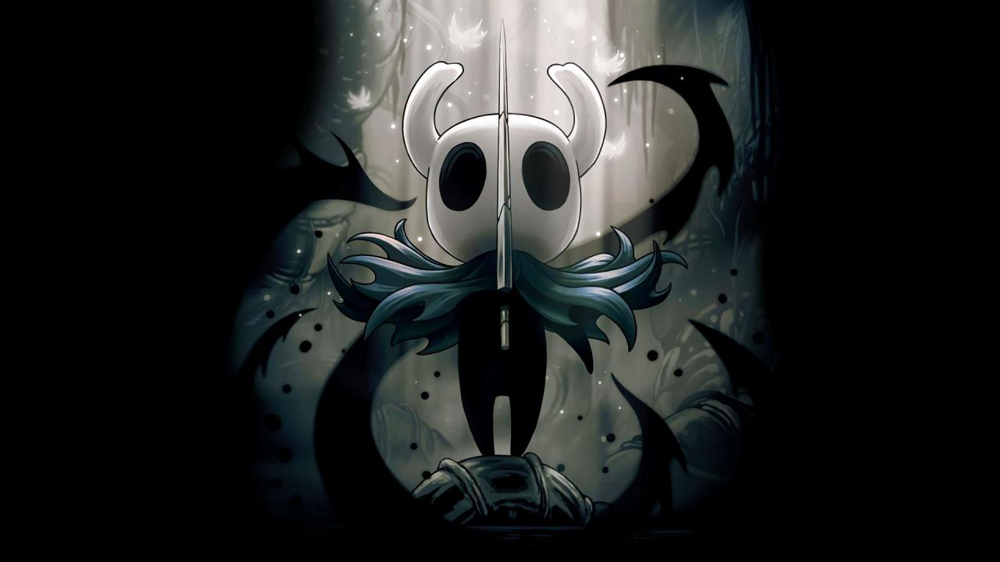

|  |
空洞骑士（Hollow Knight） 是独立团队 Team Cherry 开发的一款 2D 类银河恶魔城动作冒险游戏。在《空洞骑士》中打造属于自己的冒险之旅！穿越一个庞大却废弃的属于昆虫与英雄的王国，开启史诗般的冒险旅程。探索幽深的洞穴，与被感染的生物战斗，结识友好又奇异的昆虫，整个游戏都是经典的手绘 2D 风格。 背景设定 该作讲述了一个名为德特茅斯的衰落小镇下掩埋的古老王国“圣巢”。这个王国被瘟疫侵蚀而废弃，瘟疫的源头是名为辐光的光之古神，她可以通过思想来传播瘟疫，被侵蚀的虫子都会被本能支配从而失去心智。 这个王国的主人“苍白之王”自然不会坐视不管。他在圣巢范围之下的深渊，利用另一种远古力量“虚空”可以压制光明的特性，制造了容器一族。其中一位被选中的容器用来封印瘟疫，并被命名为空洞骑士。为了封印的稳固，白王寻找了三个守梦人来进一步巩固封印，三位守梦人的名称分别为守望者-卢瑞恩，导师-莫诺蒙，野兽-赫拉。但之后，苍白之王不知去向，不完美的容器的力量的也逐渐虚弱，最终被辐光控制。 主角要穿过圣巢各地。在安息之地中，主角受到辐光曾经的信徒和眷族“飞蛾族”唯一留下的族人的帮助，获得了和辐光力量同源的梦之武器——梦之钉。梦之钉可以读取生物内心的想法，并可以打破守梦人的保护，进入到其梦境之中杀死守梦人。杀死了三位守梦人并解开封印后，可到达十字路的黑卵神殿打败空洞骑士以及其体内的辐光。 场景地图 主角默认没有地图。每次进入新区域，要设法寻找来到该区域的制图师柯尼法，向其购买草图，否则得依靠自己记路的能力。 同时，因为只是“草图”，购买后仅显示制图师到过的区域，其他未知区域仍需要主角购买羽毛笔后在冒险过程中利用休息存档自行添加。 不同的区域需要玩家击杀特定的敌人后才能开启，有些地图也需要玩家获得相应的能力和钥匙后才能进入。 战斗系统 游戏中，玩家角色的初始攻击方式只有普通攻击。玩家可以通过攻击按键攻击敌人，不同的敌人所受到的攻击各不相同，甚至会出现格挡弹反主角的敌人。 游戏中，玩家可以获得不同的能力或护符来强化自身的攻击方式，可以进行多段攻击、蓄力攻击、旋风斩等。技能攻击需要消耗灵魂槽，灵魂槽可以通过击中敌人来增加。 游戏评测 《空洞骑士》是一个类银河恶魔城游戏，有着丰富的可探索内容和地穴。游戏所描绘的世界丰富、引人注目，充满等待挖掘的故事。探索的过程充满秘密和乐趣，还有和敌人的战斗过程，玩家在《空洞骑士》中花费的时间是值得的。（IGN评） 《空洞骑士》是一款非常容易令玩家纠结的横版过关类游戏。一方面它好看，好玩，故事有深度，另一方面，作为一款仅3人制作的独立游戏，它有制作者所极强的个人特点——可以称之为过分的难度。前者不断地引诱着玩家向前探索，领略更多的关卡内容和美丽的风景；后者则在探索路上从中作梗，设置一个个艰难障碍，让玩家进退两难。（游民星空评） |
| back |